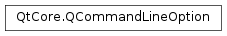

QCommandLineOption¶
Note
This class was introduced in Qt 5.2.
Synopsis¶
Functions¶
- def
defaultValues() - def
description() - def
flags() - def
isHidden() - def
names() - def
setDefaultValue(defaultValue) - def
setDefaultValues(defaultValues) - def
setDescription(description) - def
setFlags(aflags) - def
setHidden(hidden) - def
setValueName(name) - def
swap(other) - def
valueName()
Detailed Description¶
The
PySide2.QtCore.QCommandLineOptionclass defines a possible command-line option.This class is used to describe an option on the command line. It allows different ways of defining the same option with multiple aliases possible. It is also used to describe how the option is used - it may be a flag (e.g.
-v) or take a value (e.g.-o file).Examples:
QCommandLineOption verboseOption("verbose", "Verbose mode. Prints out more information."); QCommandLineOption outputOption(QStringList() << "o" << "output", "Write generated data into <file>.", "file");See also
-
class
PySide2.QtCore.QCommandLineOption(other)¶ -
class
PySide2.QtCore.QCommandLineOption(name) -
class
PySide2.QtCore.QCommandLineOption(name, description[, valueName=""[, defaultValue=""]]) -
class
PySide2.QtCore.QCommandLineOption(names) -
class
PySide2.QtCore.QCommandLineOption(names, description[, valueName=""[, defaultValue=""]]) Parameters: - names – list of strings
- other –
PySide2.QtCore.QCommandLineOption - description – unicode
- name – unicode
- valueName – unicode
- defaultValue – unicode
Constructs a
PySide2.QtCore.QCommandLineOptionobject that is a copy of thePySide2.QtCore.QCommandLineOptionobjectother.See also
PySide2.QtCore.QCommandLineOption.operator=()Constructs a command line option object with the name
name.The name can be either short or long. If the name is one character in length, it is considered a short name. Option names must not be empty, must not start with a dash or a slash character, must not contain a
=and cannot be repeated.See also
PySide2.QtCore.QCommandLineOption.setDescription()PySide2.QtCore.QCommandLineOption.setValueName()PySide2.QtCore.QCommandLineOption.setDefaultValues()Constructs a command line option object with the given arguments.
The name of the option is set to
name. The name can be either short or long. If the name is one character in length, it is considered a short name. Option names must not be empty, must not start with a dash or a slash character, must not contain a=and cannot be repeated.The description is set to
description. It is customary to add a “.” at the end of the description.In addition, the
valueNameneeds to be set if the option expects a value. The default value for the option is set todefaultValue.In Qt versions before 5.4, this constructor was
explicit. In Qt 5.4 and later, it no longer is and can be used for C++11-style uniform initialization:QCommandLineParser parser; parser.addOption({"verbose", "Verbose mode. Prints out more information."});
See also
PySide2.QtCore.QCommandLineOption.setDescription()PySide2.QtCore.QCommandLineOption.setValueName()PySide2.QtCore.QCommandLineOption.setDefaultValues()Constructs a command line option object with the names
names.This overload allows to set multiple names for the option, for instance
oandoutput.The names can be either short or long. Any name in the list that is one character in length is a short name. Option names must not be empty, must not start with a dash or a slash character, must not contain a
=and cannot be repeated.See also
PySide2.QtCore.QCommandLineOption.setDescription()PySide2.QtCore.QCommandLineOption.setValueName()PySide2.QtCore.QCommandLineOption.setDefaultValues()Constructs a command line option object with the given arguments.
This overload allows to set multiple names for the option, for instance
oandoutput.The names of the option are set to
names. The names can be either short or long. Any name in the list that is one character in length is a short name. Option names must not be empty, must not start with a dash or a slash character, must not contain a=and cannot be repeated.The description is set to
description. It is customary to add a “.” at the end of the description.In addition, the
valueNameneeds to be set if the option expects a value. The default value for the option is set todefaultValue.In Qt versions before 5.4, this constructor was
explicit. In Qt 5.4 and later, it no longer is and can be used for C++11-style uniform initialization:QCommandLineParser parser; parser.addOption({{"o", "output"}, "Write generated data into <file>.", "file"});
-
PySide2.QtCore.QCommandLineOption.Flag¶ Constant Description QCommandLineOption.HiddenFromHelp Hide this option in the user-visible help output. All options are visible by default. Setting this flag for a particular option makes it internal, i.e. not listed in the help output. QCommandLineOption.ShortOptionStyle The option will always be understood as a short option, regardless of what was set by QCommandLineParser.setSingleDashWordOptionMode. This allows flags such as-DDEFINE=VALUEor-I/include/pathto be interpreted as short flags even when the parser is inQCommandLineParser.ParseAsLongOptionsmode.
Note
This enum was introduced in Qt 5.8.
-
PySide2.QtCore.QCommandLineOption.defaultValues()¶ Return type: list of strings Returns the default values set for this option.
-
PySide2.QtCore.QCommandLineOption.description()¶ Return type: unicode Returns the description set for this option.
-
PySide2.QtCore.QCommandLineOption.flags()¶ Return type: PySide2.QtCore.QCommandLineOption.FlagsReturns a set of flags that affect this command-line option.
See also
PySide2.QtCore.QCommandLineOption.setFlags()QCommandLineOption.Flags
-
PySide2.QtCore.QCommandLineOption.isHidden()¶ Return type: PySide2.QtCore.boolReturns true if this option is omitted from the help output, false if the option is listed.
See also
PySide2.QtCore.QCommandLineOption.setHidden()QCommandLineOption.HiddenFromHelp
-
PySide2.QtCore.QCommandLineOption.names()¶ Return type: list of strings Returns the names set for this option.
-
PySide2.QtCore.QCommandLineOption.setDefaultValue(defaultValue)¶ Parameters: defaultValue – unicode Sets the default value used for this option to
defaultValue.The default value is used if the user of the application does not specify the option on the command line.
If
defaultValueis empty, the option has no default values.
-
PySide2.QtCore.QCommandLineOption.setDefaultValues(defaultValues)¶ Parameters: defaultValues – list of strings Sets the list of default values used for this option to
defaultValues.The default values are used if the user of the application does not specify the option on the command line.
-
PySide2.QtCore.QCommandLineOption.setDescription(description)¶ Parameters: description – unicode Sets the description used for this option to
description.It is customary to add a “.” at the end of the description.
The description is used by
QCommandLineParser.showHelp().
-
PySide2.QtCore.QCommandLineOption.setFlags(aflags)¶ Parameters: aflags – PySide2.QtCore.QCommandLineOption.FlagsSet the set of flags that affect this command-line option to
flags.See also
PySide2.QtCore.QCommandLineOption.flags()QCommandLineOption.Flags
-
PySide2.QtCore.QCommandLineOption.setHidden(hidden)¶ Parameters: hidden – PySide2.QtCore.boolSets whether to hide this option in the user-visible help output.
All options are visible by default. Setting
hideto true for a particular option makes it internal, i.e. not listed in the help output.
-
PySide2.QtCore.QCommandLineOption.setValueName(name)¶ Parameters: name – unicode Sets the name of the expected value, for the documentation, to
valueName.Options without a value assigned have a boolean-like behavior: either the user specifies –option or they don’t.
Options with a value assigned need to set a name for the expected value, for the documentation of the option in the help output. An option with names
oandoutput, and a value name offilewill appear as-o, --output <file>.Call
QCommandLineParser.value()if you expect the option to be present only once, andQCommandLineParser.values()if you expect that option to be present multiple times.
-
PySide2.QtCore.QCommandLineOption.swap(other)¶ Parameters: other – PySide2.QtCore.QCommandLineOptionSwaps option
otherwith this option. This operation is very fast and never fails.
-
PySide2.QtCore.QCommandLineOption.valueName()¶ Return type: unicode Returns the name of the expected value.
If empty, the option doesn’t take a value.
© 2018 The Qt Company Ltd. Documentation contributions included herein are the copyrights of their respective owners. The documentation provided herein is licensed under the terms of the GNU Free Documentation License version 1.3 as published by the Free Software Foundation. Qt and respective logos are trademarks of The Qt Company Ltd. in Finland and/or other countries worldwide. All other trademarks are property of their respective owners.